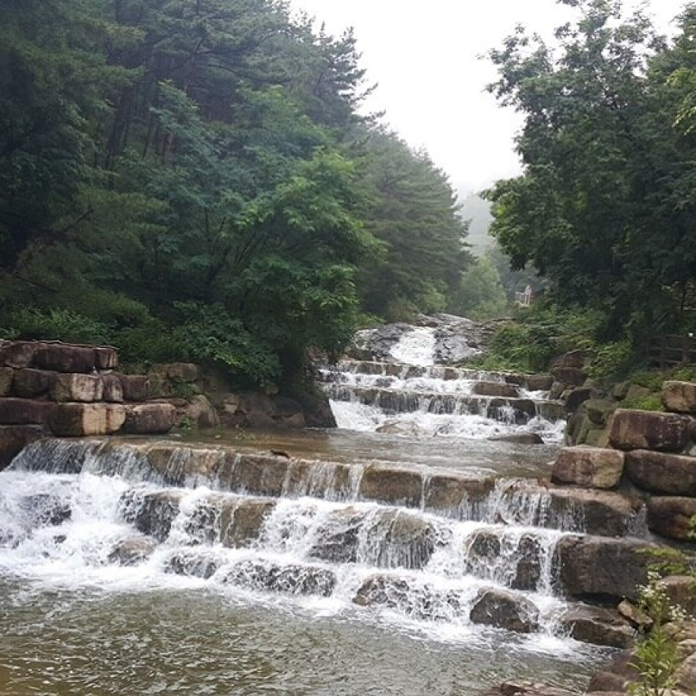

화원 자연휴양림
- 화원 자연휴양림은 2010.7.15.에 개장하였으며 면적은 720,000㎡이다.
- 산림문화휴양관, 숲속의집 등의 숙박 시설과 관리 사무소, 주차장, 족구장, 야외공연장 및 유아숲 체험장 등 각종 부대시설을 갖추고 있다.
- 휴양림 바로 아래 자전거 전용 트레킹 코스 산책로가 있고, 유아들이 계곡에서 놀기에도 괜찮다
- 도보로 10분 거리에 마비정 벽화마을을 비롯하여 전통 사찰인 용문사, 인흥사 절터 등이 있어 문화체험을 하기에도 적합하다.하여 전통 사찰인 용문사, 인흥사 절터 등이 있어 문화체험을 하기에도 적합하다.